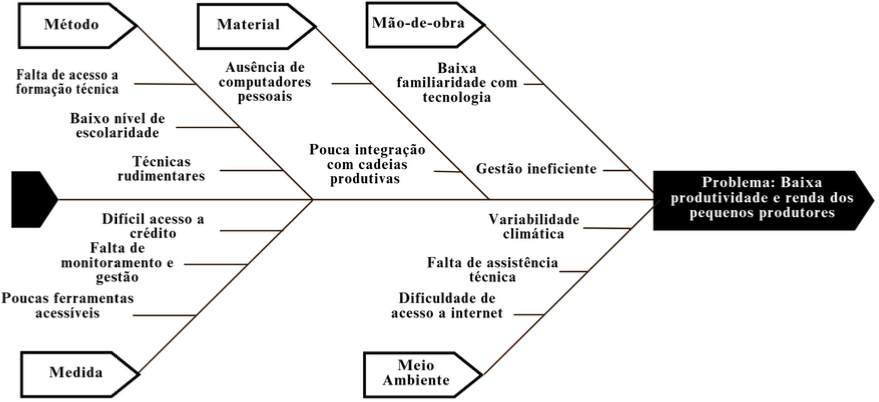

1. Visão Geral do Produto
1.1 Problema
Contexto
A agricultura familiar desempenha um papel central no abastecimento alimentar, na sustentabilidade do meio rural e na geração de renda para milhares de famílias no Brasil. Segundo a FAO (2014), esse setor é responsável pela produção de grande parte dos alimentos consumidos no país, além de exercer influência direta na preservação ambiental e no equilíbrio socioeconômico das zonas rurais.
Apesar de sua relevância, a agricultura familiar enfrenta desafios históricos que afetam sua produtividade, acesso a crédito, organização da produção e inserção em mercados mais amplos. Muitos produtores operam de forma informal, sem o uso sistemático de ferramentas de gestão ou registro de atividades, o que compromete seu planejamento e dificulta a obtenção de apoio técnico ou financeiro.
A crescente digitalização de serviços no campo apresenta oportunidades relevantes, mas também exige soluções que sejam acessíveis, intuitivas e adaptadas à realidade desses produtores. A presença de conectividade limitada, letramento digital variável e recursos financeiros restritos torna essencial o desenvolvimento de ferramentas tecnológicas que respeitem essas condições.
Nesse cenário, torna-se necessário pensar em sistemas que não apenas digitalizem informações, mas que promovam a organização, a autonomia e a profissionalização dos pequenos produtores. O desenvolvimento de soluções com esse foco contribui diretamente para metas sociais mais amplas, como o fortalecimento da agricultura familiar e a redução das desigualdades no meio rural.
Problema
O principal problema identificado é a baixa produtividade agrícola, e consequentemente, a baixa renda dos pequenos produtores de alimentos. Segundo o Jornal USP (2024), a produção de pequeno porte no campo emprega cerca de 70% do total de trabalhadores do campo, mas compõe apenas 23% da receita no campo. Nisso o subproblema que identificamos, para diminuir nosso escopo, foi: a falta de organização, controle e acompanhamento da produção dos pequenos agricultores. Já que muitos pequenos produtores rurais no Brasil enfrentam dificuldades para organizar e acompanhar suas atividades agrícolas de forma estruturada. Segundo o SEBRAE (2019), a ausência de registros técnicos e gerenciais é uma das principais fragilidades da agricultura familiar, prejudicando a capacidade do produtor de planejar, negociar e acessar políticas públicas. Essa informalidade compromete o planejamento das safras, dificulta o acesso a crédito e assistência técnica, e enfraquece a capacidade de comprovar resultados perante instituições financeiras ou programas de apoio governamental. Tudo isso impacta o nosso problema principal.
Além disso, embora existam ferramentas digitais disponíveis no mercado, a maioria delas é voltada a produtores de médio e grande porte, exigindo conhecimentos técnicos ou estruturas que não se alinham à realidade da agricultura familiar. Assim, os pequenos produtores permanecem desassistidos por soluções tecnológicas adaptadas ao seu contexto social, econômico e cultural. Assim, a Figura 1 apresenta um diagrama de causa e efeito que sumariza os principais fatores que contribuem para o nosso problema principal.

Com base nisso, esse cenário reforça a necessidade de iniciativas que promovam o acesso a ferramentas digitais simples e apropriadas à realidade da agricultura familiar, com foco na organização produtiva e no fortalecimento da autonomia desses trabalhadores rurais.
Necessidade identificada
O fortalecimento da agricultura familiar exige não apenas políticas públicas, mas também ferramentas que viabilizem a organização e o controle produtivo de forma acessível. Há uma necessidade evidente de soluções digitais que permitam ao pequeno produtor registrar suas atividades cotidianas — como datas de plantio, colheita, vendas e uso de insumos — com simplicidade e clareza, mesmo em contextos de baixa conectividade e letramento digital limitado.
Nesse contexto, o desenvolvimento de um sistema digital adaptado à realidade desses produtores torna-se essencial para apoiar sua autonomia, melhorar o planejamento de suas atividades e facilitar o acesso a crédito rural, assistência técnica e programas de incentivo. O AgroRenda nasce com esse propósito: preencher essa lacuna por meio de uma solução tecnológica intuitiva, leve e funcional, focada no registro e organização das informações do dia a dia da produção agrícola.
Esse tipo de solução contribui diretamente para o alcance da meta 2.3 dos Objetivos de Desenvolvimento Sustentável (ONU, 2015), que propõe dobrar a produtividade e a renda dos pequenos produtores de alimentos até 2030, especialmente por meio do acesso a recursos, mercados e serviços financeiros.
Solução proposta
Diante da dificuldade que pequenos produtores enfrentam para registrar e acompanhar suas atividades produtivas, propõe-se o desenvolvimento de um sistema digital simples, funcional e acessível, capaz de organizar informações básicas do dia a dia agrícola. O AgroRenda tem como objetivo central permitir que esses agricultores registrem dados essenciais — como datas de plantio e colheita, tipos de cultura, áreas cultivadas, produção obtida — de forma prática, mesmo com pouco domínio tecnológico.
O sistema será construído com base em uma interface intuitiva e minimalista, voltada para usuários com pouca familiaridade com tecnologia. A navegação será orientada por etapas simples, com formulários curtos e foco em registros rápidos. Além disso, a aplicação será otimizada para dispositivos móveis, considerando que muitos produtores utilizam smartphones como principal meio de acesso à internet.
Com os dados registrados, o sistema permitirá ao produtor consultar um histórico básico de suas atividades e organizar informações que poderão ser utilizadas em planejamentos futuros ou apresentados a técnicos agrícolas, cooperativas e instituições de crédito. Dessa forma, a solução busca fortalecer a autonomia do agricultor familiar, promover a organização de sua produção e viabilizar avanços rumo à formalização e à sustentabilidade econômica.
1.2 Declaração de posição do produto
| Elemento | Declaração |
|---|---|
| Para: | Pequenos produtores de alimentos em situação de vulnerabilidade (agricultores familiares, pescadores artesanais, comunidades indígenas e quilombolas). |
| Necessidade: | Ferramenta de gestão da produção, de forma acessível, para melhorar a renda e produtividade. |
| O produto: | AgroRenda AgroRenda é uma aplicação mobile responsiva. |
| Que: | Permite aos produtores registrarem sua produção e acompanharem seu desempenho ao longo do tempo, de forma simples, organizada e acessível. |
| Ao contrário: | Da informalidade e da exclusão tecnológica, que dificultam o desenvolvimento sustentável desses produtores. |
| Nosso produto: | É intuitivo, gratuito, sustentável, com foco na inclusão produtiva e na autonomia do produtor. |
1.3 Objetivos do produto
Objetivo principal
O principal objetivo do sistema AgroRenda é permitir que pequenos produtores rurais registrem e acompanhem suas atividades produtivas agrícolas de forma simples, estruturada e acessível, contribuindo para a organização da produção, o planejamento das safras e a geração de indicadores úteis ao controle da propriedade.
Objetivos secundários
- Permitir o registro estruturado de atividades agrícolas, como plantios, colheitas e vendas realizadas;
- Permitir que o agricultor tenha acesso a dados como a previsão do tempo;
- Apresentar indicadores de acompanhamento produtivo, como volumes produzidos e frequência de plantios;
- Operar de forma simples e acessível, com foco na usabilidade para agricultores com baixo letramento digital.
1.4 Tecnologias a serem utilizadas
Front-end:
- React Native com o framework Expo (JavaScript)
Back-end:
- Python com o framework Django Rest Framework
Banco de dados:
- SQLite
Ambiente de desenvolvimento:
- VSCode (Visual Studio Code)
- Zed
Métodos:
- Scrum adaptado e XP
Técnicas:
- Programação em pares
- Revisão de código
- Versionamento com Git:
- Testes Unitários e de Integração:
Ferramentas Adicionais:
- Github pages para documentação
- Microsoft Teams
- Notion
- Discord
- Insomnia